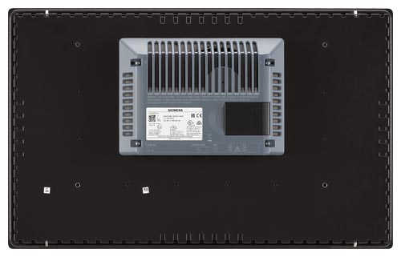
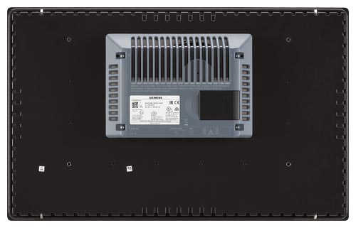

Für die Anzeige und Bedienung der Bedienoberfläche von SINUMERIK Operate kann SIMATIC ITC2200 V3, Industrial Thin Client eingesetzt werden:
 
Weitere Informationen
Weitere Informationen zu einsetzbaren Touchpanels und Handgeräten finden Sie unter: